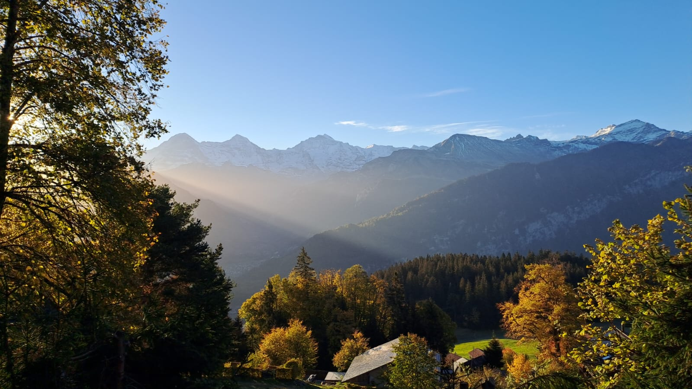
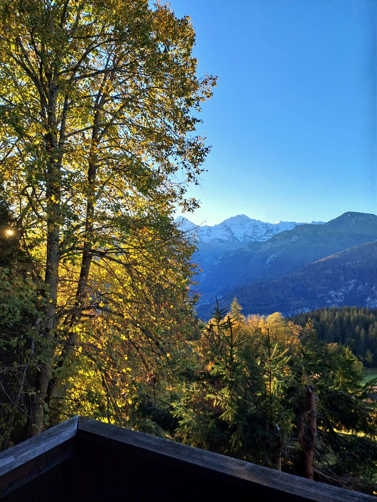
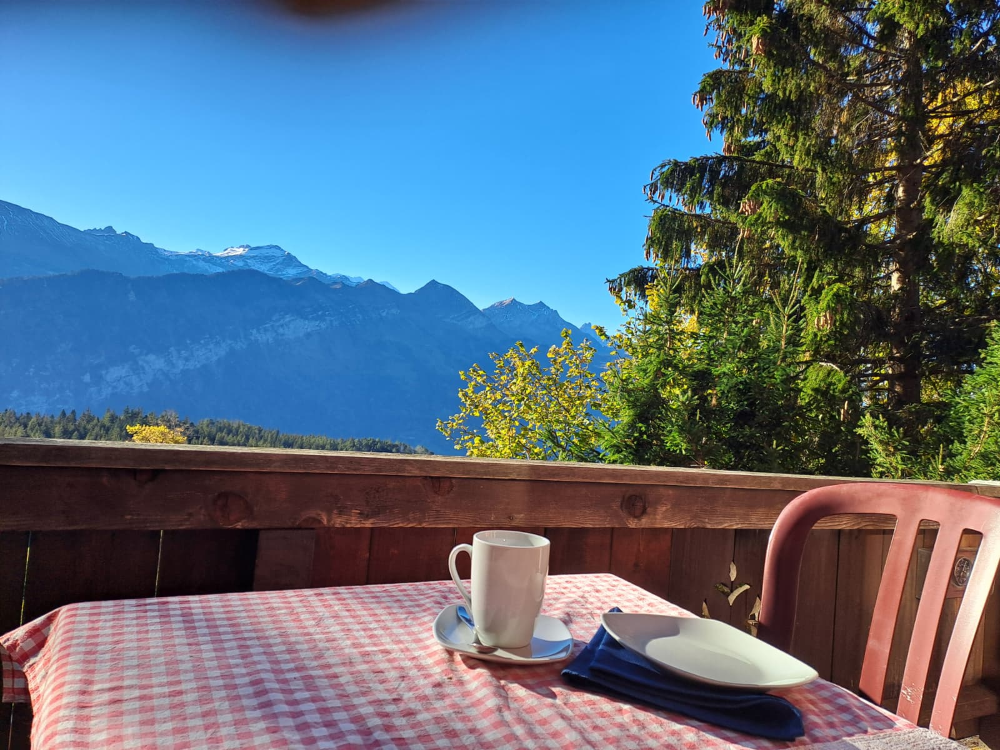
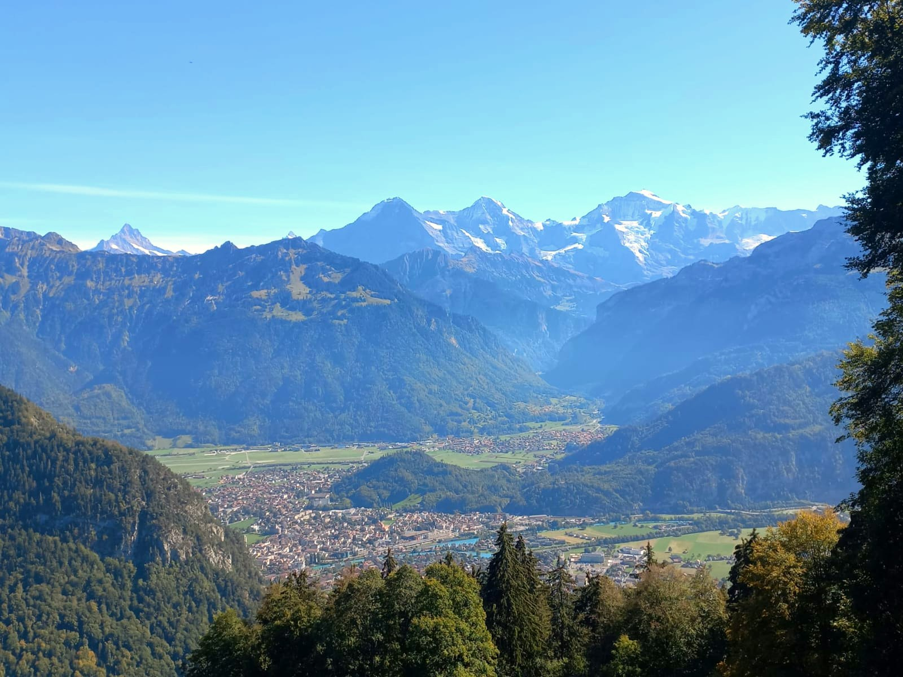

Die Umgebung
Beatenberg liegt auf ca. 1250 m ü. M., von Interlaken ca. 15 Autominuten entfernt. Der Ort ist der ideale Ausgangspunkt für Wanderungen, Skitage und Ausflüge in die ganze Region.
Sommer
Direkt vom Chalet führen Wanderwege durch Wald und über Alpweiden. Beliebte Ziele wie das Niederhorn oder das Justistal sind bequem erreichbar. Rucksack und gute Schuhe sind ein Muss – das Chalet ist über einen Wanderweg erreichbar (20 Min. von der Bushaltestelle, 10 Min. vom Autoparkplatz).

Winter
Im Winter liegt das kleine, familienfreundliche Skigebiet von Beatenberg in der Nähe. Schneeschuhwanderungen, Schlitteln und Winterwanderungen beginnen direkt vor der Tür. Der Blick auf den verschneiten Eiger, Mönch und Jungfrau ist im Winter am schönsten.

Ausflug
Das Niederhorn (1950 m) ist der Hausberg von Beatenberg – mit der Gondelbahn bequem erreichbar. Oben erwartet Sie ein herrliches Panorama auf Thunersee und Alpen, ein Startpunkt für Gleitschirmflieger und Wanderungen ins Justistal.

Ausflug
Unterhalb des Dorfes liegt der Thunersee: Schiffahrten, Badestellen und die hübschen Städtchen Thun und Spiez. Interlaken mit dem Aussichtspunkt Harder Kulm und den beiden Seen ist nur 15 Autominuten entfernt.
Prüfen Sie die Verfügbarkeit und senden Sie uns eine unverbindliche Anfrage.
Anfrage senden